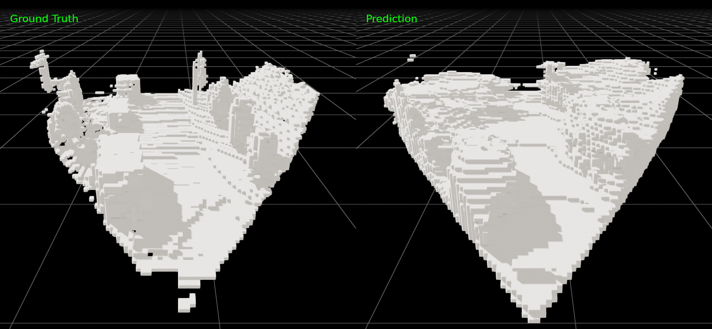

Monocupancy
Monocupancy is an attempt at synthesizing a 3D occupancy dataset using the nuScenes dataset, and training a network that predicts 3D occupancy within the camera frustum from a single image.
More info here: Monocupancy
Monocupancy is an attempt at synthesizing a 3D occupancy dataset using the nuScenes dataset, and training a network that predicts 3D occupancy within the camera frustum from a single image.
More info here: Monocupancy
The dataset was generated by aggregating lidar point clouds over time to increase the density. From this dense lidar a 3D occupancy grid was extracted from the forward camera frame.